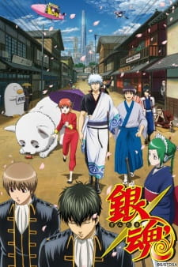
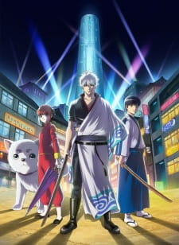
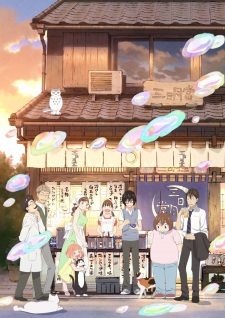
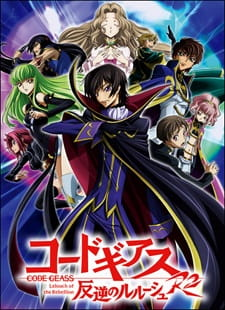
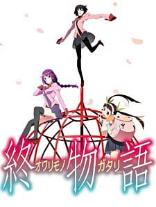

| Rank | Naslov | Slika | Broj Epizoda | Status | Ocjena |
|---|---|---|---|---|---|
| 1 | Fullmetal Alchemist: Brotherhood |
|
64 | Završeno | 9.14 |
| 2 | Gintama (4. Sezona) |
|
51 | Završeno | 9.08 |
| 3 | Steins;Gate | 24 | Završeno | 9.08 | |
| 4 | Attack on Titan (3. Sezona - 2. dio) |
|
10 | Završeno | 9.07 |
| 5 | Spy x Family | 12 | U trajanju | 9.05 | |
| 6 | Gintama (2. Sezona) |  | 51 | Završeno | 9.05 |
| 7 | Gintama: The Final (film) | 1 | Završeno | 9.05 | |
| 8 | Hunter x Hunter (2011) |
|
148 | Završeno | 9.05 |
| 9 | Fruits Basket: The Final |
|
13 | Završeno | 9.04 |
| 10 | Gintama: Enchousen | 13 | Završeno | 9.04 | |
| 11 | Legend of the Galactic Heroes |
|
110 | Završeno | 9.03 |
| 12 | Gintama (5. Sezona) |  | 12 | Završeno | 8.99 |
| 13 | Kaguya-sama: Love is War - Ultra Romantic |
|
12 | U trajanju | 8.97 |
| 14 | March Comes in Like a Lion (2. sezona) |  | 22 | Završeno | 8.96 |
| 15 | Gintama |
|
201 | Završeno | 8.95 |
| 16 | A Silent Voice (film) |
|
1 | Završeno | 8.95 |
| 17 | Violet Evergarden (film) |
|
1 | Završeno | 8.95 |
| 18 | Clannad: After Story |
|
24 | Završeno | 8.94 |
| 19 | Gintama Movie 2: Kanketsu-hen - Yorozuya yo Eien Nare (film) |
|
1 | završeno | 8.93 |
| 20 | Code Geass: Lelouch of the Rebellion R2 |  | 25 | Završeno | 8.91 |
| 21 | Owarimonogatari (2. Sezona) |  | 7 | Završeno | 8.90 |
| 22 | Gintama: Silver Soul Arc - Second Half War | 14 | Završeno | 8.88 | |
| 23 | Demon Slayer: Kimetsu no Yaiba Entertainment District Arc |
|
11 | Završeno | 8.88 |
| 24 | Your Name (film) |
|
1 | Završeno | 8.87 |
| 25 | Attack on Titan: The Final Season |
|
16 | Završeno | 8.85 |
Dodatne informacije o showovima s liste, kao i dodatna rangiranja, možete pronaći ovdje